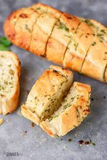

Garlice Bread

Description
For the ultimate Garlic Bread experience, skip the fancy artisan bread and use an economical French stick.
Ingredients
- 1 French stick / baguette
- 125 g / 1 US stick unsalted butter
- 2 tsp fresh garlic , minced
- 1/2 tsp salt
- 2 tsp finely chopped parsley
Steps
- Preheat oven to 200C/390F
- Cut the French stick in half. Then cut the bread almost all the way through into 2cm / 4/5" thick slices.
- Mix together the butter, garlic, salt and parsley. Taste to see if it's salty / garlicky enough for your taste
- Smear garlic butter over cut side of bread
- Smear remaining butter on the top and sides of the bread
- Wrap each bread in foil
- Bake for 15 minutes until the crust is crispy (check through foil).
- Unwrap and serve!
Goes great with bolognese or lasgana.
See other recipes.